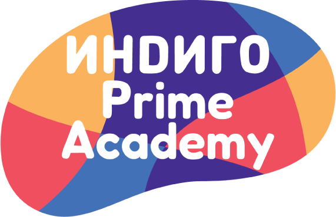

Биздин миссия
Мыкты университеттерге жана өзгөрүп жаткан дүйнөдөгү жашоого даяр, билимге кумар, билимдүү жана жоопкерчиликтүү жаштарды тарбиялоо.
Indigo Prime Academy — Бишкектеги Indigo Academy тармагынын 7–12-класстагы окуучулар үчүн эл аралык жогорку мектеби.
Биздин тарых
Indigo Prime Academy күчтүү натыйжалары жана камкор мугалимдери менен белгилүү болгон Бишкектеги жеке мектептер тармагы Indigo Academy курамында түзүлгөн.
Ата-энелер балдарын орто класстардан университетке чейин эл аралык программа, заманбап окутуу жана өздөрүнө жакын баалуулуктар менен жетелей турган мектепти сурашкан. Indigo Prime — биздин жообубуз: өспүрүмдөрдүн муктаждыктарына, кызыкчылыктарына жана максаттарына ылайыкталып курулган мектеп.
Биз Cambridge программасын сингапур методикасы менен айкалыштырабыз: окуучулар көбүрөөк билип гана тим болбостон, тереңирээк түшүнүп, өз алдынча ойлонуп, команда болуп иштегенди үйрөнүшөт.
Биздин миссия
Мыкты университеттерге жана өзгөрүп жаткан дүйнөдөгү жашоого даяр, билимге кумар, билимдүү жана жоопкерчиликтүү жаштарды тарбиялоо.
Биздин көз караш
Дүйнөнүн эң мыкты ыкмалары биздин маданиятыбыз жана баалуулуктарыбыз менен айкалышкан Кыргызстандагы алдыңкы эл аралык жогорку мектеп болуу.
Баалуулуктарыбыз
Директордун кайрылуусу
Indigo Prime Academy мектебине кызыгуу көрсөткөнүңүз үчүн рахмат. Өспүрүм курак үчүн мектеп тандоо — үй-бүлө үчүн эң маанилүү чечимдердин бири.
Мугалимдерибиз ар бир окуучуну атынан билишет. Алар окуучу татаалыраак тапшырмага даяр болгондо да, ага колдоо керек болгондо да байкашат. Ийгиликти экзамендердин жыйынтыгы менен гана эмес, окуучуларыбыздын өзүнө ишенип сүйлөгөнү, берген суроолору жана тайманбай койгон максаттары менен ченейбиз.
Сизди бизге келип, сингапур методикасы менен өткөн сабакты көрүүгө жана командабыз менен сүйлөшүүгө чакырам. Эшигибиз дайыма ачык.
Indigo Prime Academy мектебинин директору
Аралаш окутуу
Indigo Prime — аралаш мектеп. Өспүрүмдөр университетте окуп, жумушта иштегендей эле, өз ара урмат-сый жана түшүнүктүү эрежелер шартында катар окушат.
Аралаш командалар ар бир долбоорго жана талкууга ар түрдүү идеяларды алып келет.
Так жүрүм-турум кодекси жана көңүл бурган класс жетекчилери мектепте тынчтыкты жана коопсуздукту сакташат.
Ар бир окуучу кайсы сабак болбосун чыгып сүйлөйт, жетектейт жана катышат.
Бүтүрүүчүлөр жогорку окуу жайдагыдай эле бардыгы менен иштешүүгө көнүшөт.

Биздин үй-бүлө
Indigo Prime Academy Бишкектеги Indigo Academy мектептер тармагынын тажрыйбасын, ыкмаларын жана мугалимдерди өнүктүрүү программаларын бөлүшөт.
indigo.edu.kg сайтына өтүү